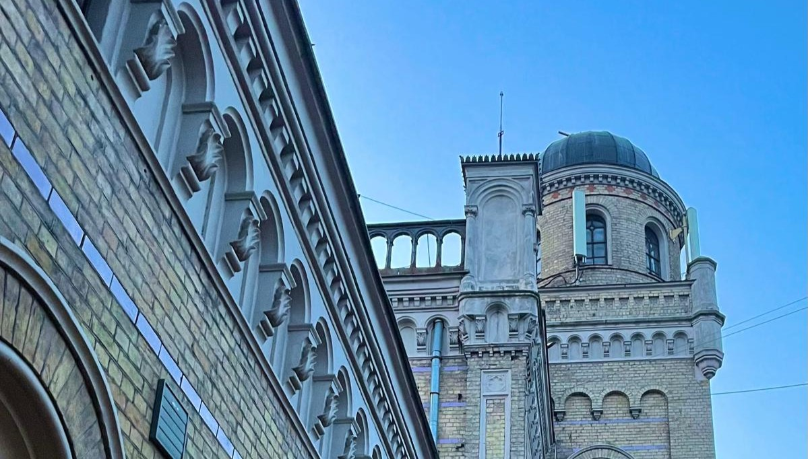

Ceļš uz studijām

Ceļš ar auto
Katrs rīts sākas ar braucienu līdz vilciena stacijai. Šis ir mierīgākais brīdis pirms studiju dienas sākuma, kad iespējams sakārtot domas un sagatavoties lekcijām.

Vilciens uz Rīgu
Vilcienā bieži tiek pārskatīti lekciju materiāli, klausīta mūzika vai pildīti nelieli studiju uzdevumi. Tas ir ikdienas pārejas posms starp mājām un universitāti.

Ierašanās universitātē
Pēc ceļa sākas diena LU Datorikas fakultātē — lekcijas, praktiskie darbi un tikšanās ar kursabiedriem.